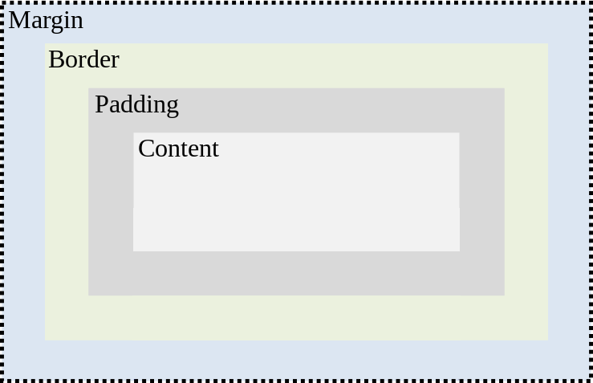

Date: 29/06/2020
First if we imagine that all our content that we write goes into a box we can better understand the differences between the three things. First the space between our actual content and the border is the padding. More padding means more space in the box. Next we have the border which is the space which is between the padding and the margin. Finally we have the margin which is the space outside the border. This affects how close or far our content is to another item.
Date: 29/06/2020
My first blog post.